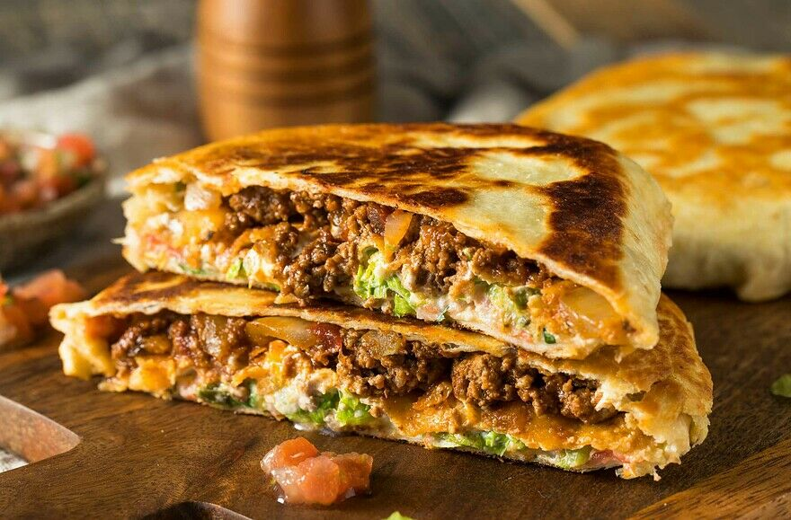

CrunchWrap
Today we will learn how to mimic a crunchwrap supreme from taco bell. YOu can customize your crunchwrap anyway you like!
FOllow the directions below and add infredients as you see fit! Enjoy!
Ingredients
- 1lb Ground Beef
- Large Tortilla Chips
- Large Soft Burrito Tortillas
- Mexican Shredded Cheese
- Taco Seasoning
- 2 cups of water
- Lettuce, Onion, Tomato
- Your choice of hot sauce
Steps
- Brown 1lb Ground Beef
- Add 2 cups of water
- Add Taco Seasoning
- Take a large soft tortilla and put a thin layer of Mexica Cheese on top
- On top of the cheese place a large crunchy tortilla chip
- Add some taco meat mixture, lettuce, tomato, and onion
- Fold the buritto over the contents of it into the following shape:
- Spray the cruchwrap with oil and fry for 2 minutes on both sides until crispy